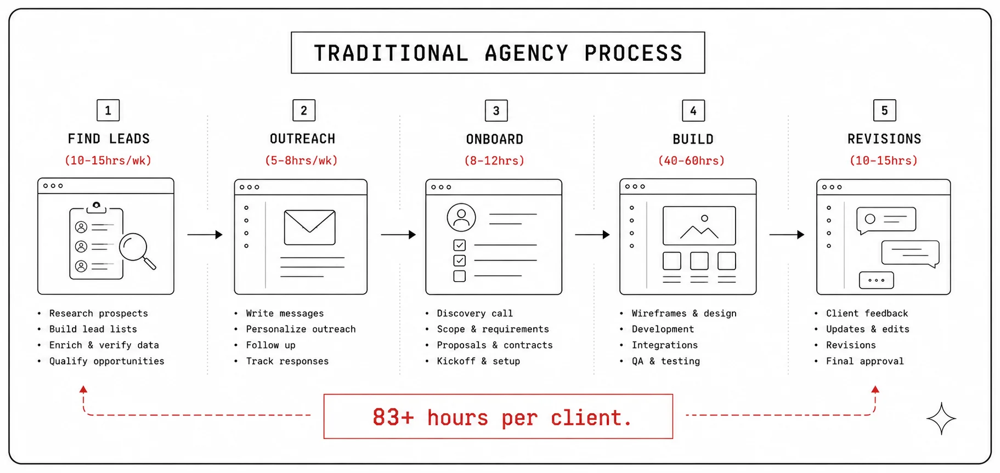
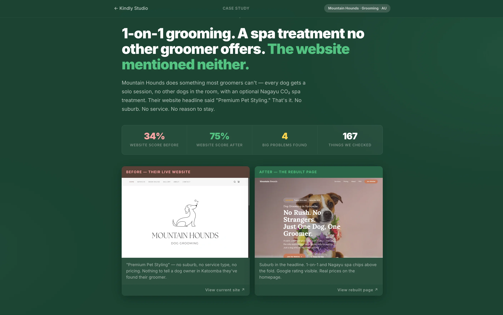
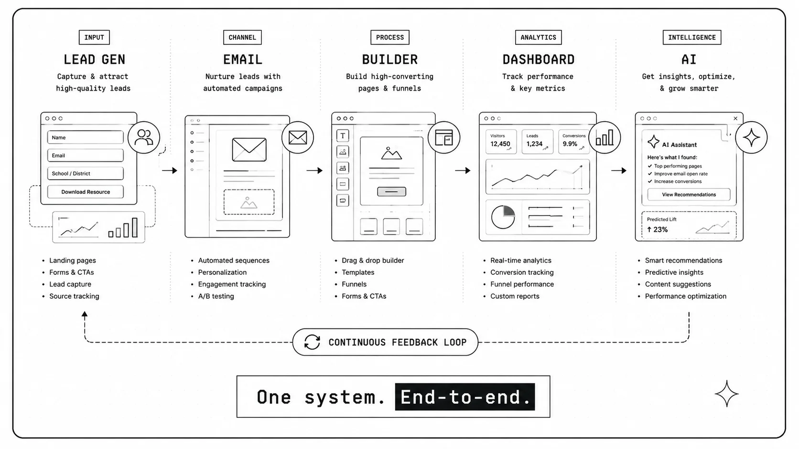

Scaling Agency Output from 1 to 10 through Five Automated Systems
I built Kindly Studio to solve the agency scaling problem: finding leads, sending outreach, and delivering websites all cost too much time and headcount. The platform replaces the entire agency workforce with five automated systems — lead gen, email campaigns, a conversion-first website builder (16 AI agents), a unified dashboard, and an orchestration layer. One person. Output of a 10-person team. Websites at $0.67 per build.
Running a web design agency is an operations problem disguised as a creative one
- Leads: Agencies hire SDRs ($4K–$6K/month) or spend 10–15hrs/week prospecting manually.
- Outreach: One person manages ~20 quality cold emails/day. At 2–5% reply rate, that's maybe 1 conversation.
- Delivery: Every website takes 40–60 hours. At $50/hr, that's $2K–$3K in labour before profit.
- Scaling: More clients = more hires = shrinking margins.
- The pricing trap: Charge $3K–$8K and small businesses can't afford you. Charge $500–$1K and you can't cover labour.
The gap: Millions of small service businesses need a $500–$2K website. Agencies reject them — the economics don't work. These businesses lose bookings daily from broken sites.
My question: What if the entire agency operation ran as a system instead of a team?

What I set out to build
- Automate lead gen, outreach, and delivery — no headcount needed to scale
- Build a conversion-first website builder targeting why visitors don't book
- Create a unified dashboard so one person can run everything
- Price at $500–$3,000 — profitable through near-zero marginal cost
- Close the loop — every build feeds back into lead generation
Audited 50+ pet business websites across AU, NZ, and SG
Agency ops: 60% of time is non-billable (prospecting, proposals, follow-ups, admin). Design is only 40% of the work.
Website audits (50+ sites):
- 92% had no Google rating visible on the homepage
- 78% had no pricing on the site at all
- 85% had a generic headline with no suburb or service type
- 70% had no clear booking path on mobile
- Average site scored 34% → 75% after rebuild
Key insight: The conversion problem isn't just informational — it's emotional. Pet owners need to feel "my dog will be safe here" before they'll book. Trust and emotional assurance convert hesitation into confidence.

Five interconnected systems where each feeds the next
Leads → outreach → audits → builds → case studies → content → more leads. One closed loop, mostly automated.
Ruled out:
- Hiring a team — margins collapse
- Existing tools — fragmented, no vertical integration
- Generic AI builders — no conversion logic
- Manual freelancing — doesn't scale

Five architectural bets that shaped the system
Build lead gen first
Trade-off: Delayed product 2 weeks.
An agency without leads is just a portfolio. Had 50+/day flowing before the builder existed.
Scrape, don't ask
Trade-off: Risk of incomplete data.
Eliminates intake forms. 90% of data in minutes. Ask only for what's missing — after showing value.
A/B email with AI hooks
Trade-off: $0.02/lead + engineering complexity.
Personalised hooks reference specific website gaps. Infrastructure supports testing anything later.
16 agents, not 1 prompt
Trade-off: Complex orchestration, slower.
Each agent enforces its own conversion rules. Version independently. Debug in isolation.
Dashboard as foundation
Trade-off: Weeks of internal tooling.
At 50+ leads/day, you drown without visibility. Tried JSON files first — chaos within 3 weeks.
50+ qualified leads/day across AU, NZ, SG, US
Google Places API → score → qualify → store in Supabase. Daily cron. 1M+ scraped total.
Dashboard view: Filterable table with business name, rating, website score, status badges (New → Contacted → Replied → Converted). Bulk actions. Click-to-expand with full details + contact history.
AI-personalised outreach with A/B testing
Pulls top-scored leads daily → AI generates personalised hook (Variant A) or curiosity line (Variant B) → sends via personal Gmail → 4-day automated follow-up → tracks everything.
Dashboard view: Daily metrics cards, A/B comparison panel (open rate, reply rate by variant), 30-day performance chart, follow-up queue, individual email log with content inspection.
Not just a builder — a framework targeting why visitors leave without booking
The 11-area conversion framework:
| Area | What it targets |
|---|---|
| Hero | Decision in 3 seconds — social proof + headline + CTA above fold |
| Trust signals | Rating, reviews, credentials visible immediately |
| Services + Pricing | Transparent pricing removes the #1 objection |
| Differentiators | Value positioned before cost |
| Testimonials | Specific reviews with names and star ratings |
| Booking path | One-tap, works at 11pm on mobile |
| Local relevance | Suburb + service area matches search intent |
| Urgency | Reason to book now, not "later" |
| Objection handling | FAQ, guarantees, cancellation — answer before they ask |
| Trust architecture | Layered throughout so trust compounds with every scroll |
| Emotional assurance | "Will my dog be okay?" — answered before they consciously ask it |
How it builds: Agent 00 scrapes everything into a Master Brief → Agents 01–16 each build one section with enforced conversion rules → Style selection gate (human picks from 7–10 options) → CRO simulation check (nothing ships below 70%).
Result: 34% → 75% average score. $0.67 per build. ~2 hours human time vs. 40–60 hours traditional.
10–15 minutes/day to run the entire operation
Custom Next.js + Supabase dashboard. Five tabs: Lead Pipeline, Email Campaigns, Website Builds, Audit Queue, Analytics.
Design principles:
- Exceptions first — surfaces problems, not status reports
- One-click depth — summary → specific item in one click
- Real-time where it matters — email delivery and build progress live-update
- Designed for one person — no team features, no overhead
Where AI works, where the human stays in control
AI Handles
- Single source of truth (Master Brief — one scrape, no drift)
- Error isolation (failed agent doesn't crash the pipeline)
- Silent fallbacks (template used if AI hook fails)
- Flagging (⚠️ missing data — never publishes with placeholders)
- Version control (each agent versioned independently)
Human Gates
- Style selection — AI presents 7–10 options, human picks one
- Final review — every build gets quality check before delivery
- Client communication — all DMs and proposals are human-written
- Pricing decisions and scope negotiation
- AI proposes, human disposes
System performance metrics
Honest gaps: Conversion lift needs 3+ months of analytics. A/B needs ~1,000 sends for significance. Attribution tracking in progress.
What I learned and what's next
Do differently: Build the dashboard and database first. JSON files don't scale. The control centre is the foundation, not an afterthought.
Push further: Proper A/B cohort tracking. Automated social posting. Client self-serve dashboard. Expand beyond pet businesses — the framework applies to any service vertical.
See more work
Back to the full portfolio or check out another case study.
← Back to Portfolio PawBook Case Study →